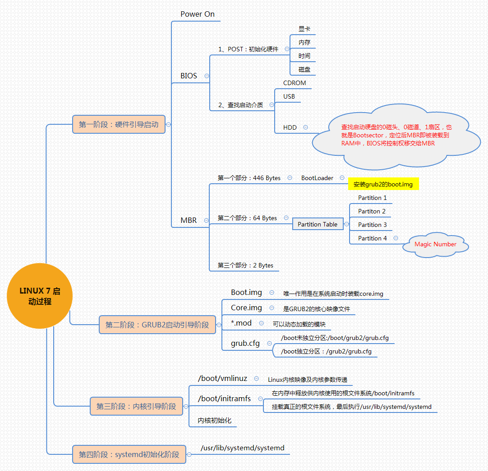
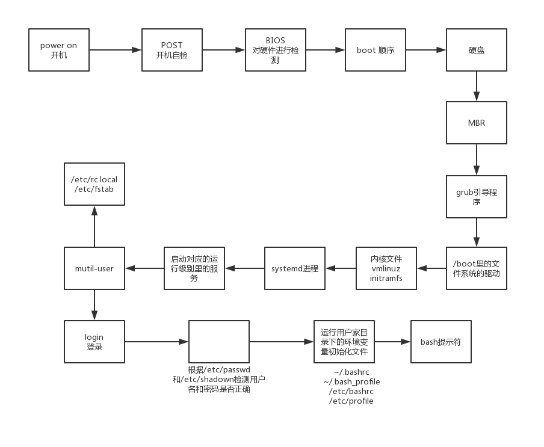

开机启动流程
含义
- 你按电脑的开机按钮，看到开机启动的过程–》到让你输入用户名和密码 —》登录进去的整个过程，背后这10多秒的时间里发生哪些事情？
为什么需要知道开机启动流程？
答案：万一开机进入不了系统，我们好去排错。
步骤
POST –> Boot Sequence –> bootloader(MBR) –> Kernel –> 加载rootfs –> switchroot –> /sbin/init –> (配置文件：/etc/inittab, /etc/init/*.conf) –> 根据init配置文件设置默认运行级别 –> 运行系统初始化脚本/etc/rc.d/rc.sysinit，完成系统初始化 –> 开启或关闭用户选定的对应运行级别下所对应的服务 –> 启动终端，打印登录提示符。
图示
- 
- 
第一步：POST加电自检
主要实现的功能是检测各个外围硬件设备是否存在而且能够正常运行起来，实现这一自检功能的是固化在主板上的ROM(主要代表为CMOS)芯片上的BIOS(Basic Input/Output System)程序；例如BIOS会检测CPU、Memory以及I/O设备是否能够正常运行，如果是个人计算机的话可能还会检测一下显示器。只要一通电，CPU就会自动去加载ROM芯片上的BIOS程序，是这样来实现的。而检测完成之后就进行硬件设备的初始化。
BIOS是电脑主板上的一个程序，用来检测硬件和配置一些硬件参数，然后启用/禁用某个硬件。
boot –》引导（启动） bootloader 启动加载程序
HDD –>hardware device/driver 硬盘
第二步：Boot Sequence(选择启动设备以加载MBR)
- 主要实现的功能是选择要启动的硬件设备，选择了之后就可以读取这个设备上位于MBR里头的bootloader了。这一步的实现是这样的：根据BIOS中对启动顺序的设定，BIOS自己会依次扫描各个引导设备，然后第一个被扫描到具有引导程序(bootloader)的设备就被作为要启动的引导设备。
- grub是linux里一个启动程序的名字
grub2 是grub的升级版本
第三步：加载bootloader(MBR)
这一步实现起来的步骤比较多，前面的BIOS通过读取并执行启动设备的MBR中的bootloader，而bootloader要实现的功能就是提供一个菜单给用户，让用户去选择要启动的系统或不同的内核版本，然后把用户选择的内核版本加载至RAM中的特定空间，接着在RAM中解压、展开，而后把系统控制权移交给内核。
grub是bootloader中的一种，就grub来说，为了打破在MBR中只有446Bytes用于存放bootloader这一限制，所以这一步的实现是这样的：grub是通过分成三个阶段来实现加载内核这一功能的，这三个阶段分别是：stage1, stage1.5以及stage2。其中：
stage1：存放于MBR的前446Bytes，用于加载stage1.5阶段，目的是为了识别并驱动stage2(或者/boot)所在分区的文件系统；
stage1.5：存放于MBR之后的扇区，加载stage2所在分区的文件系统驱动，让stage1中的bootloader能识别stage2所在分区的文件系统；
stage2：存放于磁盘分区之上，具体存放于/boot/grub目录之下，主要用于加载内核文件(vmlinuz-VERSION-RELEASE)以及ramdisk这个临时根文件系统(initrd-VERSION-RELEASE.img或initramfs-VERSION-RELEASE.img)。
概述：假如要启动的是硬盘设备，首先我们的硬件平台主板BIOS必须能够识别硬盘，然后BIOS才能加载硬盘中的bootloader，而bootloader自身加载后就能够直接识别当前主机上的硬盘设备了；不过，能够识别硬盘设备不代表能够识别硬盘设备中的文件系统，因为文件系统是额外附加的一层软件组织的文件结构，所以要对接一种文件系统，就必须要有对应的能够识别和理解这种文件系统的驱动，这种驱动就称为文件系统驱动。而stage1.5就是向grub提供文件系统驱动的，这样stage1就能访问stage2及内核所在的分区(/boot)了。
1
注意：kernel和initramfs的文件路径均以grub的``"根"``作为起始目录，且存放于stage2所在分区上；
需要注意的是，stage2、内核以及ramdisk文件通常放置于一个基本磁盘分区之上，因为grub无法驱动lvm、高级软raid等复杂逻辑设备，除非提供一个复杂的驱动接口，否则如果stage2及内核等文件都存放在lvm等复杂逻辑设备上将无法被stage1所识别，更别说加载了！
第四步：Kernel自身初始化
Kerenl在得到系统控制权之后，首先要进行自身初始化，而初始化的主要作用是：
(1)探测可识别到的所有硬件设备；
bootloader将系统控制权移交给内核就好比如后朝推翻前朝，统治者(内核)当权之后，首先要检查一下有哪些是前朝所留下的，例如有哪些领土、人力、财力、兵力可用等等。
(2)加载硬件驱动程序，即加载真正的根文件系统所在设备的驱动程序（有可能会借助于ramdisk加载驱动）；
这就像统治者(内核)在得知底下存在的人力、财力之后，开始将可以“为我所用”的人力纳入麾下，听自己使唤，而不听使唤的杀掉；
(3)以只读方式挂载根文件系统；
如果有借助于ramdisk这个临时文件系统（虚根），则在这一步之后会执行根切换；否则不执行根切换。
(4)运行用户空间的第一个应用程序：/sbin/init.
到这里内核空间的启动流程就结束了，而接下来是用户空间完成后续的系统启动流程。
注意：
ramdisk和内核是由bootloader一同加载到内存当中的，ramdisk是用于实现系统初始化的、基于内存的磁盘设备，即加载至内存（的某一段空间）后把内存当磁盘使用，并在内存中作为临时根文件系统提供给内核使用，帮助内核挂载真正的根文件系统。而之所以能够帮助内核挂载根文件系统是因为在ramdisk这个临时文件系统的/lib/modules目录下有真正的根文件系统所在设备的驱动程序；除此之外，这个临时文件系统也遵循FHS，例如有这些固定目录结构：/bin, /sbin, /lib, /lib64, /etc, /mnt, /media, …
因为Linux内核有一个特性就是通过使用缓冲/缓存来达到加速对磁盘上文件的访问的目的，而ramdisk是加载到内存并模拟成磁盘来使用的，所以Linux就会为内存中的“磁盘”再使用一层缓冲/缓存，但是我们的ramdisk本来就是内存，它只不过被当成硬盘来使用罢了，这就造成双缓冲/缓存了，而且不会起到提速效果，甚至影响了访问性能；CentOS 5系列以及之前版本的ramdisk文件为initrd-VERSION-RELEASE.img，就会出现上述所说到的问题；而为了解决一问题，CentOS 6/7系列版本就将其改为initramfs-VERSION-RELEASE.img，使用文件系统的方式就可以避免双缓冲/缓存了，我们可以说这是一种提速机制。
需要注意的是，系统发行商为了适应于各个不同的硬件接口，因此将各个不同的硬件接口的驱动组装打包起来，例如在用户第一次使用光盘安装完系统之后，会动态探测当前主机上的硬件设备并调用与之对应的设备驱动再做成ramdisk文件的。所以，ramdisk文件并非必须的，如果只是为了将Linux安装于特定硬件平台上，就可以直接把对应的驱动编译进内核即可，而不需要去使用ramdisk文件了。
第五步：init管理用户空间服务进程
init可以理解成是内核派来管理用户空间的使者，就好像天使代表上帝来访问人间一样。init这个初始化程序会根据其配置文件执行一系列操作。虽然CentOS 5、CentOS 6以及CentOS 7的init配置 文件各不相同，但总体的启动流程是不变的。
这一步的流程是：/sbin/init –> 根据init配置文件设置默认运行级别 –> 运行系统初始化脚本/etc/rc.d/rc.sysinit，完成系统初始化 –> 关闭或启动用户选定的默认运行级别所对应的服务 –> 启动终端，打印登录提示符
(1)根据init配置文件设置默认运行级别
对于CentOS 5来说，初始化程序init是SysV init，其配置文件为：/etc/inittab；
对于CentOS 6来说，初始化程序init是upstart，其配置文件为：/etc/inittab， /etc/init/*.conf，也就是upstart将配置文件拆分成多个，在/etc/init/目录下以conf结尾的都是upstart风格的配置文件，而/etc/inittab仅用于设置默认运行级别；
对于CentOS 7来说，初始化程序init是systemd，其配置文件为：/usr/lib/system/systemd/, /etc/systemd/system/；
问题
linux下的运行级别 runlevel
0 关机
1 单用户–》破解密码的时候–》rescue
2 多用户 ，不能使用NFS服务
3 完全多用户 multi-user –》字符界面 –》默认的开机级别 –》正常
4 没有使用
5 图形界面 –》正常
6 重新启动init 0 关机
init 6 重启